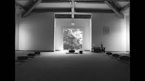

Il y a un temps intérieur qui n'a rien à voir avec le temps mesuré.
Karlfried Graf Dürckheim
Karlfried Graf Dürckheim
Tous les mardis de 12h15 à 13h30 au dojo Iokaï Vieux Port, 31 rue Saint-Saëns, 13001 Marseille.
Grand Dojo Centre Dürckheim, Mirmande
Les séances hebdomadaires de zazen durent 1h15. Plusieurs périodes de 15-20 min de méditation sans objet se succèdent, entrecoupées par la marche lente que l'on appèle Kinhin. Prévoir une tenue souple. Participation de 10 euros/ séance ou abonnement trimestriel. Venir 10 min en avance pour se changer et choisir son zafu.
Des temps de pratique sont proposés à différents moments dans l'année. Ce temps est consacré à la recherche et l'approfondissement des gestes que sont l'assise, la marche, être debout, être allongé.
Shikantaza ? C'est seulement être assis, se concentrer sur le geste qu'est zazen; c'est se plonger dans la sensation, le goût d'être simplement assis, tout comme le bébé est assis naturellement, sans effort et sans intention. Zazen c'est voir ce qu'il y a voir en ce moment, sans se laisser emporter par les pensées, le tourbillon du mental. Rien que être assis.
Kinhin, c'est le zen dans l'action. Le menton est rentré comme en zazen, la colonne droite. On pousse le ciel avec le sommet du crâne. Les épaules sont détendues. Le regard est dans le prolongement de l'arrête du nez. Kodo Sawaki le maître de Taisen Deshimaru, disait que « le kinhin est la source de tous les pouvoirs magiques ».
Être debout, simplement, dans la tenue juste, la forme juste et le juste rythme de l'inspire et de l'expire. Comment je me sens être debout, là, en ce moment.
Il y a une manière plus juste d'être allongé, qui révèle une détente profonde du corps entier qui se donne, qui s'abandonne à l'acte, l'action, le geste "être allongé".